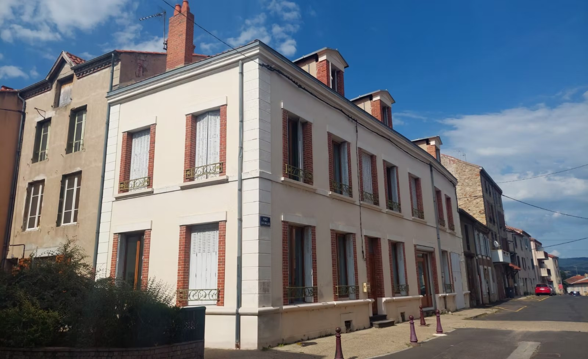

Notre équipe
Les visages
derrière la mission
Docteur·es et ingénieur·es passionné·es, nous combinons chimie analytique, ACV et chémo-informatique pour transformer les laboratoires.
5 expert·es pluridisciplinaires
Instrumentation
Durabilité
Christophe Pérès
Fondateur — Pôle méthodes & instrumentation
Docteur-ingénieur AgroParisTech, Christophe a débuté au Research Institute for Chromatography dans l'instrumentation analytique. En 2009, il prend la responsabilité de la Recherche Analytique Parfums chez Chanel. En 2021, il fonde Le Labo Durable.
Durabilité
Bastien Raccary
Responsable pôle durabilité — ACV & stratégie low impact
Ingénieur CPE Lyon, docteur de l'Université Bordeaux 1. En 2019, il co-fonde The Green Analytical Project (GAP) avec Christophe Pérès. Auditeur ISO 14001, il audite des structures, propose des plans d'action et accompagne les équipes dans leur transition environnementale.
Chémo-info
Durabilité
Clément Truan
Responsable pôle chémo-informatique & IA
Docteur-Ingénieur Chimie ParisTech et de l'Université Clermont-Auvergne. Sa double compétence en chimie analytique et en programmation lui permet de fournir des solutions de pointe utilisant algorithmes génétiques et intelligence artificielle.
Support
Xavier Rouessac
Responsable support & formation — Expert LC/GC/MS
Chez les Rouessac, l'Analyse Chimique est une histoire de famille. Fort de 35 ans d'expérience en chromatographie et spectrométrie de masse, Xavier assure le support à distance et sur site des solutions déployées par Le Labo Durable.
Chémo-info

Notre laboratoire
Un membre à part entière de l'équipe
Situé à Brioude, en Auvergne, notre laboratoire nous permet d'expérimenter les solutions que nous proposons à nos clients. Conçu comme un lieu de rencontres et de coworking, il accueille aussi des associations comme la Fresque du Climat.
Réserver une salle →Rejoignez-nous
Envie de transformer les laboratoires avec nous ?
Nous sommes toujours en quête de talents passionnés. Envoyez-nous votre candidature.
Postuler →